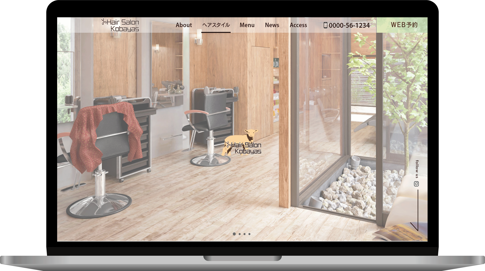
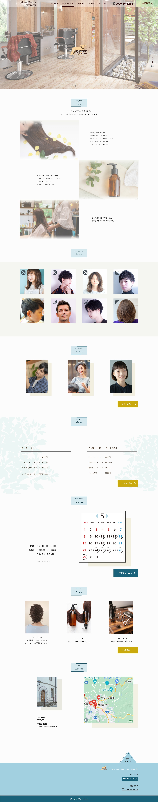

架空サイト「Hair salon Kobayas（ヘアーサロン コバヤス）」LPデザイン
| 制作期間 | 10日 |
|---|---|
| 使用ツール | Adobe PhotoshopAdobe XD |
| 制作意図・こだわり | ロゴ：この課題を掲載されていたこばやすさんが、プロフィール画像に羊のイラストを使用されていたため、「羊＝毛を切る」で美容室と共通点があると思い、あえて羊の画像を取り入れたロゴを作成しました。HPを開くとすぐに店名を認識できるよう、真ん中に設置しました。 HP：「近隣に根付いた客層をターゲットにしたい」ということで、家族層のお客様が来られるということをアピールするために、ヘアスタイルリストには子供や中年男性の写真も起用しました。 装飾：無印良品のテイストということで比較的シンプルにしました。 |
| ◆店名 | Hair salon Kobayas |
|---|---|
| ◆事業規模 | 小規模 |
| ◆制作背景 | 今まで口コミとリピート客だけで成り立っていたが、
客層の高齢化や転勤などによる環境の顧客離れが顕著になってきた。 新規顧客を開拓するために、ネットを使った集客を視野に入れて活動を始めた段階。 |
| ◆コンセプト | 自然派のシャンプーやトリートメントを取り扱っている。 観葉植物やフェイクグリーンで店内を飾っていて、床や柱などに木目を使用した温もりある店内。 無印良品のようなリラックス出来るような空間を意識している。 |
| ◆ターゲット | 20代～40代。どちらかというと女性に来てもらいたいが、ターゲットの家族（旦那さんなど）にも来てもらいたい。近隣に根付いて住んでいる人。 |